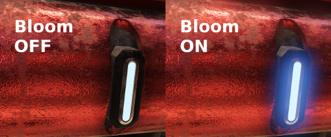
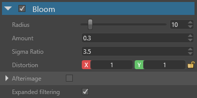

ブルーム
中級 アーティスト
ブルーム（bloom） エフェクトは、画像中の最も明るい部分を拡張し、周囲ににじみ出させることで、カメラを圧倒する明るい光をシミュレートします。

このエフェクトは、明度フィルターエフェクトの結果を入力として使用します。
プロパティ

| プロパティ | 説明 |
|---|---|
| Radius | ブルームの半径。高い値を設定すると、パフォーマンスに影響することがあります。 |
| Amount | ブルームの量／強さ。 |
| Sigma Ratio | これは、ブルームの減衰に影響します。これは、ブルームのカーネルを計算する際に、ガウスぼかしの式で使われる標準偏差（シグマ）です。 |
| Distortion | 画像を、水平または垂直方向に引き伸ばします。 |
| Afterimage | 残像をシミュレートします。残像とは、明るいスポットを長く見ていると、フェードアウトする前に目に「焼き付く」現象です。
|
| Fade Out Speed | 残像（有効な場合）が各フレームで減少する係数です。1 は無限の残像を意味し、0 は残像が全くないことを意味します。 |
| Sensitivity | 残像（有効な場合）の、光に対する敏感度です。この値が高いほど、光にカメラの焦点を合わせたときの効果が早く生じます。 |
| Expanded filtering | FXAA とブルームを反転させ、ぼかしにはよりリッチな合成カーネルを使用します。これにより、一時的なゆらぎを抑えることができます。 |